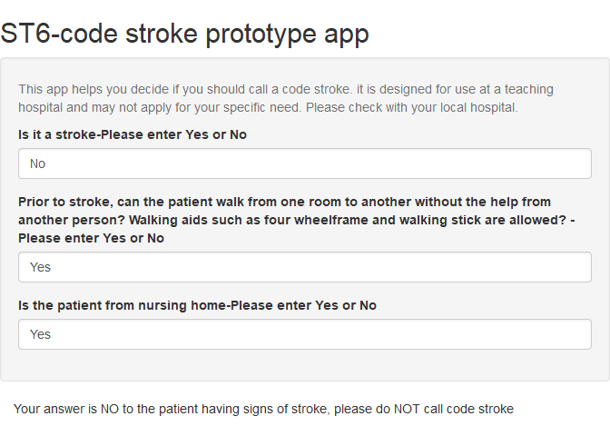

Chapter 12 App
There are several platforms for writing and deploying apps. Rstudio has created a library Shiny to write app. This app can be deployed by creating an account at https://shiny.rstudio.com/.
12.1 Brief introduction to Shiny app
Shiny divides the app to 2 component: ui or user interface web page and server or the engine for running the app. This app is used to assist if a stroke code should be activated. It uses the reactive call within server to switch between activating and deactivating code stroke.
library(shiny)
# Define UI for application
ui <- bootstrapPage(
titlePanel("ST6-code stroke prototype app"),
wellPanel(
helpText("This app helps you decide if you should call a code stroke. it is designed for use at a teaching hospital and may not apply for your specific need. Please check with your local hospital."),
#stroke
textInput('stroke',"Is it a stroke-Please enter Yes or No","No"),
#walk
textInput('walk',"Prior to stroke, can the patient walk from one room to another without the help from another person? Walking aids such as four wheelframe and walking stick are allowed? -Please enter Yes or No","Yes"),
#home
textInput('nursing',"Is the patient from nursing home-Please enter Yes or No","Yes")
),
#partition screen to 3 columns- sum to 12
column(9,
tabPanel(
textOutput("Hospital"),
textOutput("Walk"))
)
)
# Define server logic
server <- function(input, output, session) {
#stroke
answer<-reactive({
if(input$stroke=="No")
{return ("Your answer is NO to the patient having signs of stroke, please do NOT call code stroke")
} else {
return("Please call code stroke")
}
})
output$Hospital<-renderText({return(answer())})
#walk
answer1<-reactive({
if(input$stroke=="No")
{return ("Your answer is NO to the patient having signs of stroke, please do NOT call code stroke")
} else { if(input$walk=="No") {
return("Your answer is No, indicating that premorbidly the patient is unable to walk unaided, please do NOT call code stroke")
} else { if(input$nursing=="Yes") {
return("Your answer is Yes to the patient living in nursing home, please do NOT call code stroke")
}
}
return("Please call code stroke")
}
})
output$Walk<-renderText({return(answer1())})
}
# Run the application
shinyApp(ui = ui, server = server)##
## Listening on http://127.0.0.1:5287
Other available apps can be found at https://gntem3.shinyapps.io/ambmc. It was designed to explore deployment of mobile stroke unit (ambulance equipped with CT scanner for stroke treatment) in Melbourne (Phan et al. 2019). The app illustrates the use of slide ruler to enable user interaction. A picture can be inserted into the app by placing the picture inside sub-folder www. A web page can be inserted using html coding. Plotly object can be rendered wihtin shiny using the call renderPlotly. Leaflet map object can be rendered using the call renderLeaflet.
References
Phan, T. G., R. Beare, M. Parsons, H. Zhao, S. Davis, G. A. Donnan, V. Srikanth, and H. Ma. 2019. “Googling Boundaries for Operating Mobile Stroke Unit for Stroke Codes.” Front Neurol 10: 331.